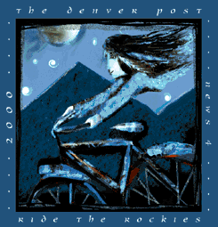
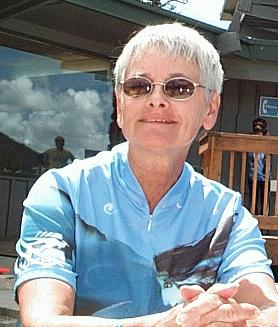
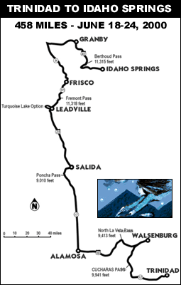
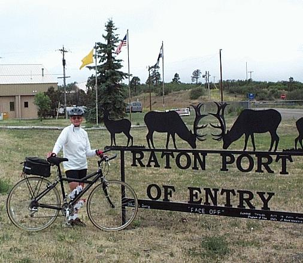
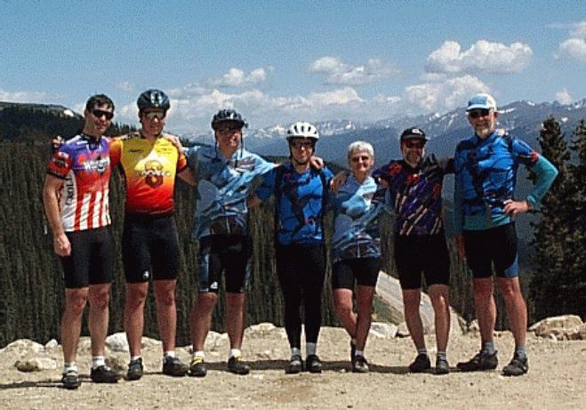
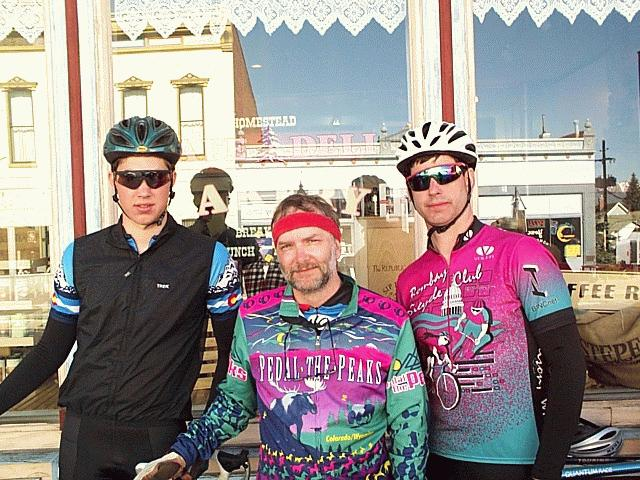
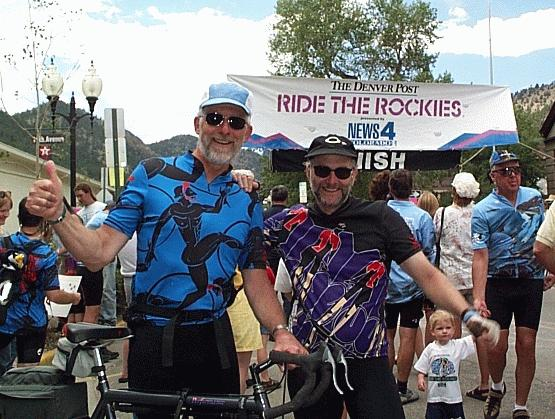
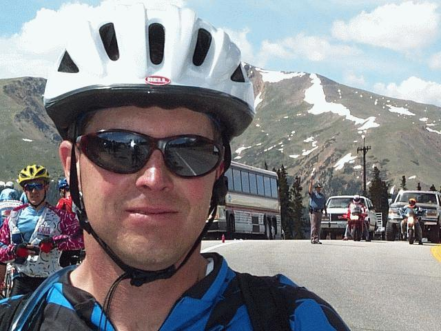
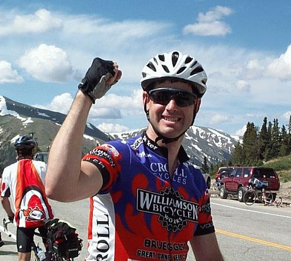
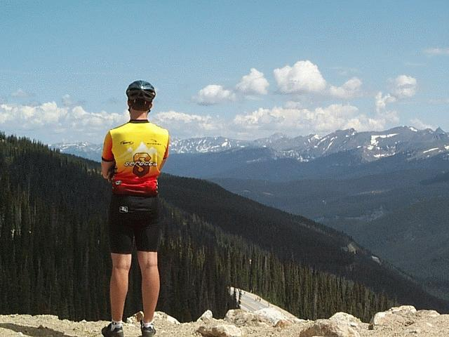

|
Ride The Rockies, 2000 |
 The Denver Post &News4 Present Ride The Rockies, 2000 |
||||
| I wouldn't advise waiting
until your sixties before doing Ride The Rockies but that's what
Barb did. Despite being an experienced cyclist, she had her
worries when the 2000 edition of Ride The Rockies began. For the
rest of us, it was a pleasure to see her long held doubts give way to
confidence at tours end.
Courage is what it takes to proceed in the face of
doubt and although she might not admit it, it was courage that got her
through her first Rockies tour. She would need it because it was
one of the tougher rides I've experienced.  The ride this year started in the south of Colorado near the New Mexico border. So close, in fact, that Barb and I couldn't resist climbing a pass to touch New Mexican soil on the Saturday before the start of the ride. It was cold and the two of us were frozen by the time we
arrived back in Trinidad where the ride would begin the following
morning.  The other members of our party would arrive in Trinidad later that Saturday after shuffling the cars to the finishing point of the ride, Idaho Springs. |
 Barb gets extra credit in New Mexico The tour from Trinidad to Idaho Springs will cover 458 miles and includes stops in Walsenburg, Alamosa, Salida, Leadville, and Frisco. In retrospect, the day from Walsenburg to Alamosa was the most difficult. This was due to a stiff wind that resulted in many sags and a lot of sore bottoms. Our group of cyclists consisted of Adam, Barb, Dan, Dennis, Evan, Jack, and myself. In support was Cindy and Dennis's mom. Adam, Evan, and I cycled together on that toughest of days and we ended up spending about eight hours on our respective saddles.  With the first two and toughest days behind us, we settled in. A miscommunication would mar the overnight in Salida with most of the group enjoying another fine meal at Laughing Ladies. Although Barb was looking forward to it, a misplaced message resulted in her missing the opportunity. Leadville is always accompanied by a visit to the Homestead Bakery
where they claim the coffee is above all others. The now familiar
ride around Turquoise Lake was never better. Evan, Adam, and I
enjoyed the short climbs and the twisty descents.  |
The final day was visibly enjoyed by
everyone in our group. The day is marked by a climb over Berthoud
Pass which is 11,315 feet above sea level. Dennis and I topped the pass together to find
Dan waiting for our arrival. We were soon to be joined by the rest of the
group. We enjoyed basking in the triumph of the tour and the
bright sunshine before descending into Idaho Springs to the Finish.  No one who remembers the 2000 Ride The Rockies will fail to recall the pain of the windy day from Walsenburg to Alamosa. Nor will they forget the joy and challenge of Berthoud Pass. For us six from Madison, we'll always have the warming memory of watching Barb conquer fear with courage and tenacity.    Photos and text by Joseph King, jking@mailbag.com. Home |
|||
{kind=link}
{kind=link}
{kind=link}
{kind=link}
{kind=link}
{kind=link}
{kind=link}
{kind=link}
{kind=link}